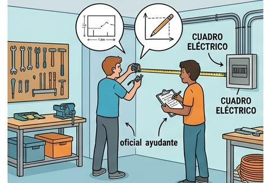

¿Qué vamos a hacer?
En esta actividad vais a dar vuestros primeros pasos como profesionales de la reforma. Vuestra misión será realizar el levantamiento técnico de una estancia real. Aprenderéis que antes de coger la brocha o el cemento, un buen oficial necesita "leer" el espacio, plasmarlo en papel y medir con precisión milimétrica.
Organización
Tiempo: 30 minutos.
Trabajo: En parejas de "Oficial" y "Ayudante".
Lugar: Taller o aula específica a medir.
Paso a paso
1. El Croquis (El mapa del tesoro)
Antes de sacar la cinta métrica, dibujad a mano alzada la forma de la habitación en vuestro cuaderno:
- Dibujad las paredes con líneas claras.
- Situad dónde están las puertas y las ventanas (¡Cuidado! Marcarlas con una "X" para saber que ahí no se pinta ni se pone azulejo).
2. La Medición (Mano a mano)
Aquí entra en juego el equipo:
El Ayudante sujeta el extremo del flexómetro (cinta métrica).
El Oficial tensa la cinta, realiza la lectura y anota la medida.
¿Qué medimos? Largos, anchos, alturas y los huecos (puertas/ventanas).
3. Registro de Datos
Anotad cada medida sobre el dibujo del aula que habéis realizado previamente. Aseguraos de usar la misma unidad (siempre en centímetros o siempre en metros).
4. Salto a lo Digital
Pasaremos las anotaciones a una Hoja de Cálculo de Google y calcularemos con su ayuda los metros cuadrados de pintura y de suelo que necesitamos cubrir.
¿Qué vamos a aprender?
A representar espacios reales en un dibujo técnico básico.
A usar herramientas de medición profesional con precisión.
A distinguir entre superficie útil y elementos que no computan (huecos).
A trabajar de forma coordinada en el sector de la construcción.
Trabajo en equipo
Os dividiréis los roles, pero rotaréis a mitad de la tarea:
Oficial: Responsable de la lectura de la cinta y la calidad del croquis.
Ayudante: Responsable de la fijación de la cinta y de asegurar que no haya obstáculos.
Ambos debéis verificar que la medida anotada es la correcta.
Material que vais a usar
Cinta métrica (Flexómetro) de al menos 5m.
Cuaderno de dibujo o folios en blanco.
Lápiz y goma (¡importante para rectificar el croquis!).
Dispositivo (Tablet u ordenador) con Google Sheets o calculadora.
Si surge algún problema…
¿La cinta se dobla? El ayudante debe mantenerla tensa y pegada al suelo/pared.
¿La habitación no es cuadrada? Dividid el espacio en rectángulos más pequeños.
¿Dudas con los huecos? Recordad: "Lo que es aire o cristal, no se suma al total de pintura".
Si te quedan dudas sobre cómo abordar esta tarea puedes consultar el siguiente vídeo: